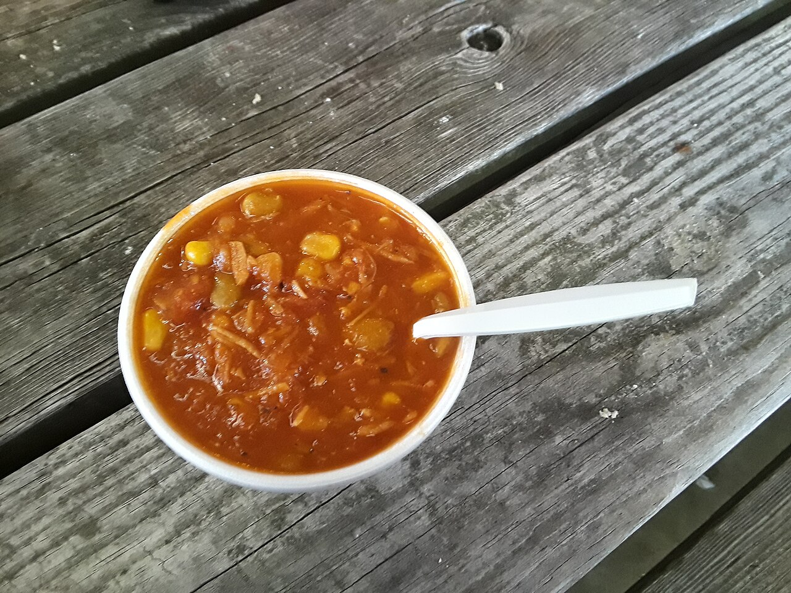

a dishBrunswick stew
also: stew · barbecue stew
On an eastern North Carolina menu it is 'Brunswick stew' or just 'stew'; a cup or a bowl beside the plate.

A thick tomato stew of chicken or pork with corn, butter beans (lima beans), onion and, in the east, potatoes, cooked in big pots and served in a cup beside the barbecue. Virginia and Georgia both claim it; North Carolina makes it without argument at barbecue houses, church suppers and fundraisers, where it holds the place that hash holds in South Carolina. The name is a county in Virginia or a city in Georgia, both named for the German duchy of Brunswick. The squirrel of the first recipes has given way to chicken, and at a barbecue house some of the chopped pork goes into the pot.
The story Cited · web-georgiaencyclopedia-brunswick-stew
Two states keep the argument. In Brunswick, Georgia, a twenty-five-gallon iron pot on a plaque is called the vessel in which the stew was first cooked, in 1898, on St. Simons Island; the Virginia General Assembly answered in 1988 with a proclamation that Jimmy Matthews, a Black cook, made a squirrel stew for Creed Haskins in Brunswick County in 1828 and gave it the county's name. The Virginia Writers' Project guide of 1941 tells it as a hunting-camp story — the cook left behind throws everything into the pot — and Marjorie Kinnan Rawlings passed on the tale in 1942 that it was a favourite of Queen Victoria and came from Braunschweig. None of the claims traces to the ground. North Carolina stays out of the fight and eats the stew. Kennedy's Barbecue in Greensboro was advertising 'Barbecue, Brunswick stew, slaw and hush puppies' in 1949, the plate that became the state's standard. Our State printed Mary Scott's recipe on November 10, 1951: the governor's wife's pot held a five-pound chicken, corn, lima beans, tomatoes, onion, potato, okra and chopped barbecue. At Melton's in Rocky Mount the stew sat beside boiled potatoes, slaw, corn sticks and hushpuppies until the house closed in 2005. Tradition holds — the eastern stew has potatoes in it and the Piedmont's may not, and church stew-masters cook it overnight in iron pots for the fall fundraisers, with a paddle and a crowd.
How it is done Tradition
A whole chicken, or chicken and pork, boiled until it falls apart and picked from the bone; the stock takes tomatoes, corn cut from the cob, butter beans, onion and, in the east, potatoes, and simmers for hours with a long paddle going round until the meat has shredded into the vegetables and a spoon stands up in it. Salt, black and red pepper; at a barbecue house a ladle of chopped pork and its sauce. Served hot in a cup or bowl beside the tray, or by the quart to take home.
Today Tradition
A standing side at eastern barbecue houses and at the Greensboro-line pits of the Piedmont; Melton's priced a plate with slaw, hushpuppies and Brunswick stew in 1988. Tradition holds — churches and fire departments across the Piedmont sell it by the quart at fall stews.
Facts
| course | side |
|---|---|
| meat | mixed |
| styles | Eastern North Carolina barbecue, Lexington-style barbecue |
| region | North Carolina, Eastern North Carolina, The North Carolina Piedmont, The American South |
| links | Brunswick stew — Wikipedia · New Georgia Encyclopedia — Brunswick Stew |
| confidence | medium · needs verification · updated 2026-09-15 |
Recipes you may use
Public-domain cookbooks are printed here in full, spelling and all. Where a recipe is still in copyright, the page gives the ingredients — a list of what goes in is a fact — and links to the rest.
Old Virginia Brunswick Stew
The squirrel is in the older Virginia line of the stew; Carolina pits cook it with chicken or pork and, in the east, potatoes. 'Thick enough to eat with a fork' is the test a Carolina stew is still held to.
Circuit Hash (recipe 152)
Abby Fisher's dish is called a hash, not a stew, but its parts are the stew's: tomatoes, butter beans, corn and pork, cooked down together. She was born into slavery in South Carolina about 1832.
Vegetable Soup
An ancestor rather than the thing: a North Carolina book of 1867, the same beans, corn and tomatoes in the same pot, without the name. Ochra is okra.
Not to be confused with
- hash and rice — Hash is a smooth meat gravy over rice; Brunswick stew is chunky with corn and beans and red with tomato, and rice is not under it.
Its kin
Who points back
Pictures
{kind=link}

{kind=link}
![A state News Bureau sheet of four prints headed Barbeque, Braswell Plantation, Sept 1944. In the bottom right print three black iron cauldrons stand on stones over open wood fires under a shed roof, steam pouring off all three, with mule wagons and a field behind. The other prints show a plank table lined with jars of preserves and a string band playing from the bed of a truck, wagons parked among the pines with children running between them, and three men in hats peeling and cutting vegetables into galvanised washtubs.](../../images/brunswick-stew/brunswick-stew-cauldrons-braswell-1944.jpg)
Sources
- Brunswick stew — Wikipedia · link
- Brunswick Stew (John A. Burrison, 2005-04-06, ed. 2013-08-06) · link
- North Carolina Brunswick Stew (Our State Staff, 2023-01-18; the 1951 recipe of Mary Scott) · link
- The True Story of Hushpuppies, a Genuine Carolina Treat (Robert F. Moss, 2023-06-25) · link
- Melton's Barbecue — Wikipedia · link
- Pig pickin' — Wikipedia · link
- Hash (Saddler Taylor) · link
- Aunt Caroline's Dixieland Recipes: A Rare Collection of Choice Southern Dishes — Emma and William McKinney, 1922 · link
- What Mrs. Fisher Knows About Old Southern Cooking, Soups, Pickles, Preserves, Etc. — Mrs. Abby Fisher, 1881 · link
- Dixie Cookery; or, How I Managed My Table for Twelve Years. A Practical Cook-Book for Southern Housekeepers — Mrs. [Maria Massey] Barringer, of North Carolina, 1867 · link
- Flickr Commons · link
- State Archives of North Carolina on Flickr Commons · link
- Department of Conservation and Development, Travel Information Division Photograph Collection · link
Where it came from: Cited a source we name · Harvested pulled from an open dataset · Tradition what the tradition says, hedged · Inference this project's reasoning · Field somebody stood there. This record as JSON.